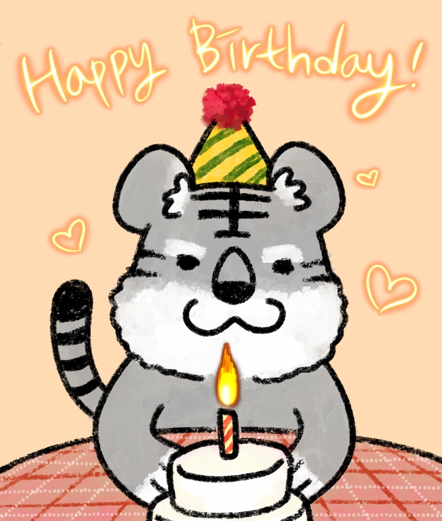

"선물이구나!"
"지금까지 입력한 정답들은 모두 우리 생일을 의미하는 거였어."
"2005년의 다른 이름은 을유년, 1월 13일의 순우리말은 해오름달 열사흘날!"
"그것들과 힌트를 조합하면 생일날 우리가 받아야 할 것, 바로 선물이 되는 거야!"
정답을 입력하자 미궁 탈출을 알리는 페이지가 나타났다.
야호, 드디어 미궁 탈출이다!
언니들이 만든 멋진? 특별한? 미궁을 탈출해서 앞으로 걸어나가자 웬 귀여운 흑호랑이 한 마리가 나타났다.
케이크를 들고 있는 모습이 누가 봐도 우리를 축하해주러 온 모습이었다.

"안녕, 애들아! 난 언니들의 분신, 범이야."
"임인년에 태어난 아기 흑호랑이지. 정화 언니가 만들어줬어!"
"나는 정말 귀엽고 활기차고 사랑스럽고..."
범이는 그렇게 한 5분간 자기 자랑을 했다.
이제 그만하고 들어가라고 하려던 참에, 범이가 우리 표정을 읽었는지 급히 자기 자랑을 그만하고 말을 하기 시작했다.
"아, 참참!"
"언니들이 전해주라고 한 말이 있었는데, 내 얘기를 하느라고 깜빡할 뻔했네."
"언니들이 너희들의 생일을 진심으로 축하한대!"
"그리고 여기 폼 주소로 들어가서 게임 평과 소감, 받고 싶은 선물을 입력하면, 어느 날 조용히 그 선물이 집에 도착해 있을 거래!"
"물론 그 어느 날이 언제일지는... 언니들도 장담을 못 한대. (뭐야... 웅성웅성... 뭐야... 웅성...)"
"그럼 난 이만!"